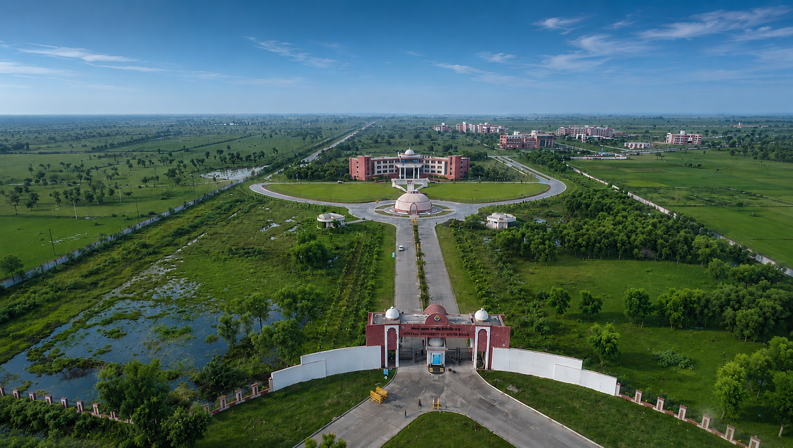
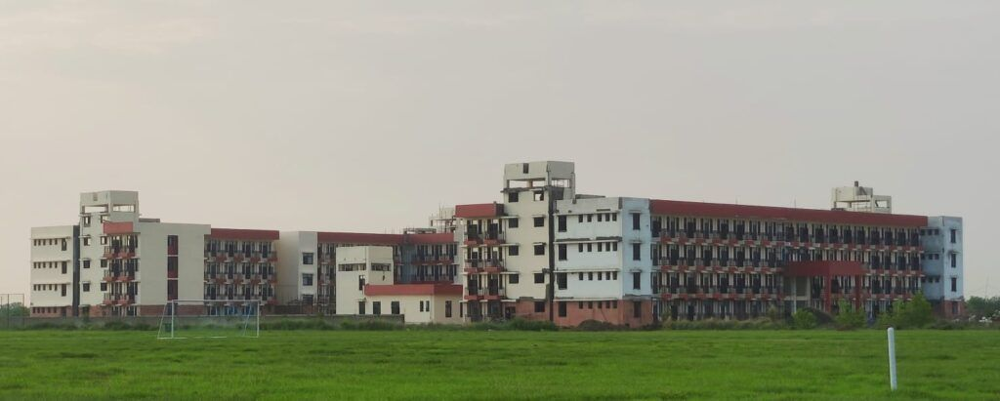

University Information
Get close to Central University of South Bihar — a centre of learning, research, and national purpose at Gaya, Bihar.
Collective Reasoning, National Purpose
Central University of South Bihar (CUSB) is one among 54 Central Universities under the Department of Higher Education, Ministry of Education, Government of India. Established under the Central Universities Act, 2009 (Section 25) as Central University of Bihar (CUB), it was renamed by the Central Universities (Amendment) Act, 2014.
The University operates from a permanent 300-acre campus at Panchanpur, approximately 15 km from Gaya — in the historic heartland of Bihar, the land of enlightenment.
Core Directives

Vision
To be a centre of excellence in teaching, research, and innovation — contributing to national development and global knowledge creation.

Mission
To foster an inclusive academic environment promoting critical thinking, ethical values, and interdisciplinary research.

Motto
Collective Reasoning — fostering collaborative inquiry and shared wisdom across all disciplines and communities.